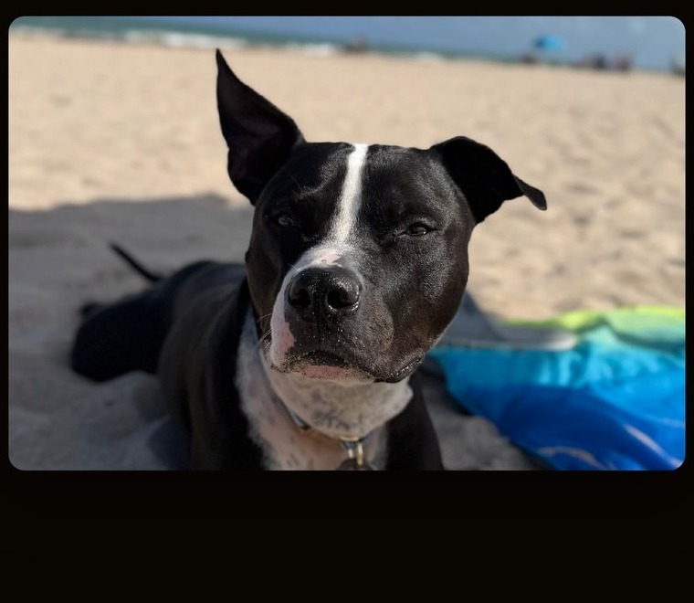
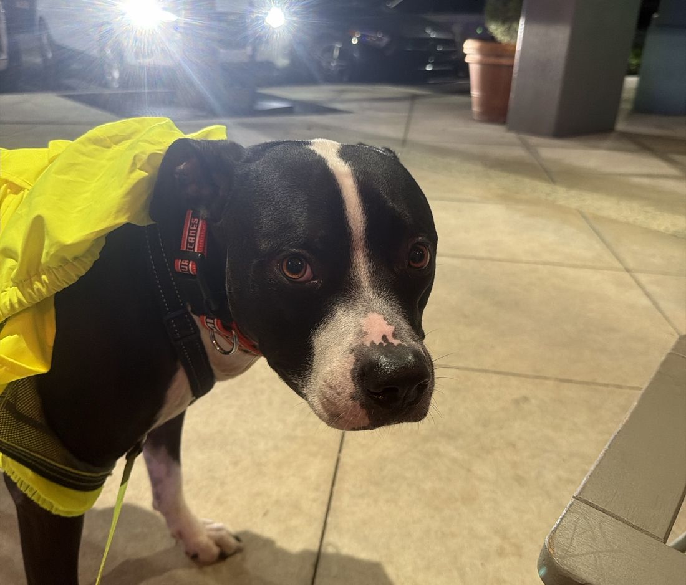

01
Bespoke trip design
Private itineraries built around pace, taste, and access — hotels, tables, and days that feel curated rather than booked.
Bespoke travel & content
Tysonstravels builds private itineraries and on-location storytelling for people who want the real room, the real table, and a dog who has earned every mile.
Services
No rate cards on the wall. Every engagement is scoped to the trip, the brand, and the story you want told.
Private itineraries built around pace, taste, and access — hotels, tables, and days that feel curated rather than booked.
Photo and short-form production on the road with Tyson in frame when the story calls for it — real footage, not stock.
Storytelling for hospitality, pet, and lifestyle brands that want a rescue-led face and a polished, executive tone.
Itineraries that treat dogs as first-class travelers — suites, routes, and experiences chosen because they work in practice.
How it works
Tell us the destination, the occasion, and what “great” looks like. We reply with a clear read on fit.
We shape the itinerary or content plan, with access notes and a timeline you can actually keep.
We stay close while you are on the road — adjustments, introductions, and on-location capture when needed.


About
Tyson spent years in a cage. Now he walks hotel hallways like he owns the quiet ones.
He is a rescue pit bull — shelter name Titan — adopted into a life of real travel, Carolina Hurricanes red, and work that puts him in the room. The team travels with him. The work stays hands-on.
Tysonstravels is the service arm of that life: bespoke trip design, content made on location, and partnerships that prefer presence over performance.
Contact
Write with dates, destination, and whether you need the trip, the content, or both. We answer as people, not as a ticket queue.